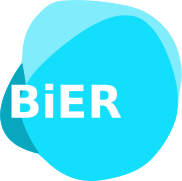

<link rel="import" href="../lib/jsorolla/src/lib/components/jso-application-behavior.html">
<link rel="import" href="../lib/jsorolla/src/lib/components/opencga/jso-opencga-manager-behavior.html">
<link rel="import" href="../lib/jsorolla/src/lib/components/jso-panel.html">
<link rel="import" href="../lib/jsorolla/src/lib/components/jso-wizard.html">
<link rel="import" href="../lib/jsorolla/src/lib/components/jso-tooltip.html">
<link rel="import" href="../lib/jsorolla/src/lib/components/jso-opencga-input-text.html">
<link rel="import" href="../lib/jsorolla/src/lib/components/jso-select.html">
<link rel="import" href="../lib/jsorolla/src/lib/components/jso-opencga-button-tooltip.html">
<link rel="import" href="../lib/jsorolla/src/lib/components/jso-help-menu.html">
<link rel="import" href="../lib/jsorolla/src/lib/components/jso-genome-viewer-element.html">
<link rel="import" href="../lib/jsorolla/src/lib/components/variant/jso-variant-frequencies-grid.html">
<link rel="import" href="../lib/jsorolla/src/lib/components/table/jso-table.html">
<link rel="import" href="../lib/jsorolla/src/lib/validator/jso-validator.html">

<link rel="import" href="../lib/jsorolla/src/lib/components/opencga/jso-opencga-header.html">
<link rel="import" href="../lib/jsorolla/src/lib/components/opencga/jso-opencga-footer.html">
<link rel="import" href="../lib/jsorolla/src/lib/components/opencga/files/jso-opencga-job-browser.html">
<link rel="import" href="../lib/jsorolla/src/lib/components/opencga/samples/jso-opencga-sample-browser.html">
<link rel="import" href="../lib/jsorolla/src/lib/components/opencga/files/jso-opencga-upload-file.html">
<link rel="import" href="../lib/jsorolla/src/lib/components/opencga/files/jso-opencga-create-study.html">
<link rel="import" href="../lib/jsorolla/src/lib/components/opencga/files/jso-opencga-create-project.html">
<link rel="import" href="../lib/jsorolla/src/lib/components/opencga/files/jso-opencga-browser.html">
<link rel="import" href="../lib/jsorolla/src/lib/components/variant/jso-variant-browser.html">

<link rel="import" href="../lib/jsorolla/src/lib/components/jso-genome-viewer-element.html">

<!--<link rel="import" href="../lib/jsorolla/src/lib/components/opencga/dashboard/jso-dashboard.html">-->

<link rel="import" href="bierapp-home.html">

<!-- <script src="variant-index-form.js"></script>
<script src="bierapp-manager.js"></script>
<script src="bierapp-effect-grid.js"></script>
<script src="bierapp-stats-grid.js"></script> -->


<!-- <link rel="import" href="../bower_components/sortable-table/sortable-table.html">
<link rel="import" href="../bower_components/core-list/core-list.html">
<link rel="import" href="../bower_components/core-ajax/core-ajax.html">
<link rel="import" href="../bower_components/core-menu/core-menu.html">
<link rel="import" href="../bower_components/core-item/core-item.html">

<link rel="import" href="../lib/jsorolla/src/lib/components/opencga/jso-project-browser.html">
<link rel="import" href="../lib/jsorolla/src/lib/components/opencga/jso-bioformat.html">
<link rel="import" href="../lib/jsorolla/src/lib/components/opencga/jso-job-no-ready.html">

<link rel="import" href="../lib/jsorolla/src/lib/components/variant/jso-variant-component.html">
<link rel="import" href="../lib/jsorolla/src/lib/components/jso-sortable-table-ajax.html">

<link rel="import" href="../lib/jsorolla/src/lib/components/variant/jso-variant-index-view.html"> -->


<dom-module id="bierapp-element">
    <style>
        :host {
            display: block;
            position: relative;
            cursor: default;
            font-size: 13px;
            background-color: var(--default-primary-color);
            height: 100%;
            width: 100%;
        }
        /*.menu > div {
            margin-left: 10px;
            cursor: pointer;
            text-align: center;
            padding: 0 5px;
        }*/

        #menu div.option {
            box-sizing: border-box;
            margin-right: 1vw;
            margin-top: 15px;
            margin-bottom: 15px;
            cursor: pointer;
            text-align: center;
            line-height: 30px;
            padding: 0 5px;
        }

        #menu div.option:hover {
            border-bottom: 1px solid var(--divider-color);
        }

        #menu div.option[active] {
            font-weight: normal;
            border-bottom: 2px solid var(--accent-color);
        }

        jso-opencga-header {
            position: absolute;
            top: 0;
        }

        jso-opencga-footer {
            position: absolute;
            bottom: 0;
        }
        /*#content {
            background-color: inherit;
            position: absolute;
            top: 60px;
            width: 100%;
            height: calc(100% - 60px);
            overflow-y: auto;
        }*/

        .content {
            position: absolute;
            width: 100%;
            top: 60px;
            height: calc(100vh - 60px);
            /*background-color: transparent;*/
        }

        jso-dashboard {
            height: calc(100vh - 60px);
        }

        jso-variant-browser {
            /*height: calc(100vh - 60px);*/
            height: 100%;
        }

        #browserPanel {
            position: absolute;
            left: 0;
            top: 0;
            width: 600px;
        }

        div.icon {
            margin-left: 15px;
        }

        div.menu-button {
            padding: 0 10px;
        }

        div.menu-button:hover {
            background-color: rgba(0, 0, 0, 0.20);
        }
    </style>
    <template>
        <div class="content" menu-option="home">
            <bierapp-home data-option="home"></bierapp-home>
            <!-- <jso-variant-browser id="variantBrowser" menu-option="variantbrowser"></jso-variant-browser> -->
            <!--<jso-dashboard menu-option="dashboard"-->
            <!--projects="{{projects}}"></jso-dashboard>-->
        </div>


        <!-- <jso-panel modal movable closable hidden$="{{createProjectHidden}}">
            <div class="header">Manolo</div>
            <jso-opencga-create-project class="container" id="createStudy" on-close="handleCloseCreateProject" projects="{{projects}}">
            </jso-opencga-create-project>
        </jso-panel>


        <jso-panel modal movable closable hidden$="{{createStudyHidden}}">
            <div class="header">Manolo</div>
            <jso-opencga-create-study class="container" id="createStudy" on-close="handleCloseCreateStudy" projects="{{projects}}">
            </jso-opencga-create-study>
        </jso-panel>

        <jso-panel modal movable closable hidden$="{{uploadHidden}}">
            <div class="header">Upload file</div>
            <jso-opencga-upload-file id="upload" class="container" on-close="handleCloseUpload" projects="{{projects}}" bioformats="{{bioformats}}">

            </jso-opencga-upload-file>
        </jso-panel> -->

        <div id="content" class="content" menu-option="home,variantbrowser">
            <jso-panel hidden collapsible closable movable id="browserPanel" on-hidden="handlePanelHidden">
                <!-- <jso-panel id="browserPanel" modal movable closable hidden$="{{browserHidden}}"> -->
                <div class="header">
                    <i class="fa fa-folder-open-o"></i> File Browser
                </div>
                <jso-opencga-browser class="container" id="browser" projects="{{projects}}" bioformats="{{bioformats}}" mode="file" on-fileselect="handleFileSelect" on-need-refresh="handleUserNeedRefresh"></jso-opencga-browser>
                <!-- <jso-opencga-browser id="browser" class="container" on-fileselect="handleFileSelect" bioformats="{{bioformats}}" projects="{{projects}}" on-need-refresh="handleUserNeedRefresh"></jso-opencga-browser> -->
            </jso-panel>
        </div>

        <div class="content" menu-option="variantbrowser">
            <jso-variant-browser id="variantBrowser"></jso-variant-browser>
        </div>

        <jso-opencga-header id="jsoHeader" selected-option="{{selectedOption}}" user-data="{{userData}}" on-login="handleLogin" on-logout="handleLogout" hide-jobs hide-browse show-menu-on-login>
            <span class="icon">
                
            </span>
            <span class="title">BiERapp</span>
            <span class="description"></span>

            <div id="menu" class="menu horizontal layout flex">
                <!--<div class="hover" on-click="handleToggleCreateProject">-->
                <!--New Project-->
                <!--</div>-->

                <!--<div class="hover" on-click="handleToggleCreateStudy">-->
                <!--New Study-->
                <!--</div>-->
                <!--<div class="hover" on-click="handleToggleUpload">-->
                <!--Upload-->
                <!--</div>-->
                <!--<div data-option="dashboard" on-click="handleMenu">-->
                <!--Dashboard-->
                <!--</div>-->

                <div title="Browse my data" class="option" on-click="handleLoggedOnlyMenuPanel" data-panel="browserPanel">
                    <i class="fa fa-cloud"></i>
                    <span class="option-text">My data</span>
                </div>
                <!-- <div class="hover" on-click="handleToggleBrowser">
                    <i class="fa fa-cloud"></i> My data
                </div> -->

                <!--<div data-option="variantbrowser" on-click="handleMenu">-->
                <!--Variant browser-->
                <!--</div>-->
            </div>

            <jso-help-menu class="helpmenu" selectedOption="{{selectedOption}}">
                <a href="https://github.com/babelomics/bierapp/wiki" target="_blank">
                    <i class="fa fa-book"></i> &nbsp; Documentation
                </a>
                <a href="https://github.com/babelomics/bierapp/wiki/Tutorial" target="_blank">
                    <i class="fa fa-compass"></i> &nbsp; Tutorial
                </a>
                <a href="https://github.com/babelomics/bierapp/" target="_blank">
                    <i class="fa fa-github"></i> &nbsp; Source code
                </a>
            </jso-help-menu>
        </jso-opencga-header>

        <jso-opencga-footer menu-option="home,loging,singup,profile,remember">
            <!-- <jso-opencga-footer hidden$="{{computeFooter(selectedOption)}}" > -->
            BierApp: created by Computational Genomics Department
            <br> Centro de Investigación Principe Felipe
            <br> 2015
        </jso-opencga-footer>

    </template>
</dom-module>

<script>
    Polymer({
        is: "bierapp-element",
        behaviors: [JsoApplicationBehavior],
        properties: {
            // selectedOption: {
            //     type: String,
            //     value: "home",
            //     notify: true,
            //     reflectToAttribute: true,
            //     observer: 'selectedOptionChanged'
            // },
            userData: {
                type: Object,
                notify: true,
                observer: 'userDataChanged'
            },
            projects: {
                type: Array,
                notify: true,
                observer: 'projectsChanged'
            },
            allowedTools: {
                type: Array,
                value: function() {
                    /*return ["opencga-storage.sh"];*/
                    return ["bierapp"];
                }
            },
            browserHidden: {
                type: Boolean,
                value: true,
                reflectToAttribute: true
            },
            uploadHidden: {
                type: Boolean,
                value: true,
                reflectToAttribute: true
            },
            createStudyHidden: {
                type: Boolean,
                value: true,
                reflectToAttribute: true
            },
            createProjectHidden: {
                type: Boolean,
                value: true,
                reflectToAttribute: true
            },
            bioformats: {
                type: Array,
                notify: true,
                value: [{
                    text: "VCF 4.0",
                    value: "VARIANT",
                    validator: VCFValidator
                }]
            }
        },
        ready: function() {},
        // selectedOptionChanged: function (neo, old) {
        //     var menuItems = Polymer.dom(this.root).querySelectorAll('[menu-option]');
        //     for (var i = 0; i < menuItems.length; i++) {
        //         var item = menuItems[i];
        //         var currentItemValue = item.getAttribute("menu-option");
        //         if (neo == currentItemValue) {
        //             item.removeAttribute("hidden");
        //         } else {
        //             item.setAttribute('hidden', '');
        //         }
        //     }
        // },
        // handleMenu: function (e) {
        //     var option = e.currentTarget.dataset['option'];
        //     this.setMenu(option);
        // },
        setMenu: function (option) {
            if (option) {
                this.selectedOption = option;
            }
        },

        projectsChanged: function(neo, old) {},
        // handleToggleBrowser: function(e) {
        //     this.browserHidden = !this.browserHidden;
        // },
        // handleCloseBrowser: function(e) {
        //     this.browserHidden = true;
        // },
        //
        // handleCloseUpload: function(e) {
        //     this.uploadHidden = true;
        // },
        // handleToggleUpload: function(e) {
        //     this.uploadHidden = !this.uploadHidden;
        // },
        // handleCloseCreateStudy: function(e) {
        //     this.createStudyHidden = true;
        // },
        // handleToggleCreateStudy: function(e) {
        //     this.createStudyHidden = !this.createStudyHidden;
        // },
        // handleCloseCreateProject: function(e) {
        //     this.createProjectHidden = true;
        // },
        // handleToggleCreateProject: function(e) {
        //
        //     this.createProjectHidden = !this.createProjectHidden;
        // },

        // computeFooter: function(selectedOption) {
        //     return selectedOption == 'dashboard' || selectedOption == 'variantbrowser';
        // },
        handleFileSelect: function(e) {
            console.log("file");
            console.log(e.detail);
            var file = e.detail;
            if (file.index && file.index.status == 'READY') {
                this.$.variantBrowser.file = file;
                this.setMenu('variantbrowser');
                // this.handleCloseBrowser();

            }
        },
        handleLogin: function() {
            //            this.browserHidden = false;
            // this.selectedOption = "home";
        },
        handleLogout: function() {
            // this.browserHidden = true;
            this.$.browserPanel.hide();
        },
        handleUserNeedRefresh: function() {
            this.$.jsoHeader.getUserInfo(true);
        },
        userDataChanged: function (neo, old) {
            var me = this;
            if (this.userData) {
                var projectIds = [];
                for (var i = 0; i < this.userData.projects.length; i++) {
                    var p = this.userData.projects[i];
                    projectIds.push(p.id);
                }
                var projects = [];
                OpencgaManager.projects.studies({
                    id: projectIds.join(','),
                    query: {
                        sid: Cookies("bioinfo_sid")
                    },
                    request: {
                        success: function (response) {
                            if (response.response[0].errorMsg === '' || response.response[0].errorMsg == null) {
                                for (var i = 0; i < response.response.length; i++) {
                                    var r = response.response[i];
                                    me.userData.projects[i].studies = r.result;
                                    projects.push(me.userData.projects[i]);
                                }
                                /* update projects property*/
                                me.projects = projects;
                            } else {
                                console.log(response.error);
                                console.log(response.response[0].errorMsg);
                            }
                            me.loading = false;
                        },
                        error: function () {
                            console.log('Server error, try again later.');
                            me.loading = false;
                        }
                    }
                });
            } else {
                console.log("no user data")
            }
        },
        annonymousLogin: function() {
            this.$.jsoHeader.anonymousSign();
        }
    });
</script>
</polymer-element>
